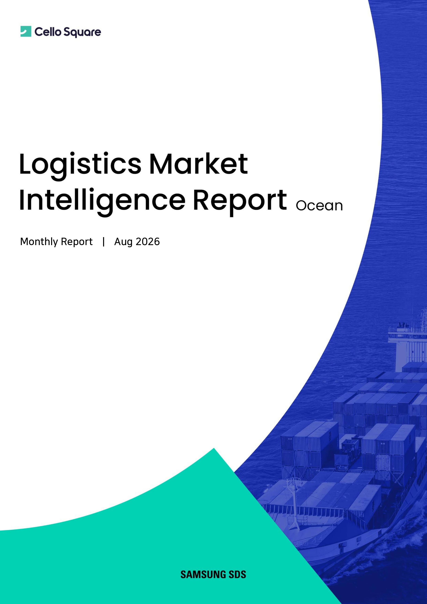

US strength extends into a sixth consecutive week; Panama Canal transit cuts and Rotterdam port disruption bring supply pressure back into focus
Global container trade is forecast to grow 3.8% year on year in 2026, while global container fleet supply is expected to expand 4.6%, outpacing demand growth. However, Red Sea diversions and Hormuz transit uncertainty are extending vessel voyage distances and turn times, absorbing effective capacity — leaving a persistent gap between nominal supply growth and what the market actually feels.
Rates continue to move divergently by route. In W36, the SCFI Composite Index rose 2.3% week on week, extending gains to a sixth consecutive week. US West Coast and US East Coast rose 10.9% and 15.7% month on month, supported by firm US demand, port disruption from typhoons in China, and concerns over Panama Canal transit constraints. North Europe and the Mediterranean fell 11.3% and 14.2% respectively as peak-season volumes were depleted, while East Coast South America and the Middle East rose 20.7% and 26.2% respectively on continued supply constraints. This whitepaper reviews global container demand and fleet, vessel deployment by route, schedule reliability and port congestion, and SCFI trends alongside Samsung SDS's short-term rate outlook.

Key Concept Definitions
- TEU (Twenty-foot Equivalent Unit)
- The standard unit for measuring container shipping capacity, based on a 20-foot container. Used as a common reference when comparing container volumes, fleet sizes, and newbuild deliveries.
- Global Container Trade
- The total volume of container cargo transported on major global trade routes. This whitepaper examines both global aggregate and route-level growth forecasts, including Asia–North America and Asia–Europe.
- Front-loading
- The practice of shipping expected import volumes earlier than planned in anticipation of tariff hikes, policy changes, or supply chain disruptions. In 2026, US tariff uncertainty has become a key variable supporting front-loading demand.
- Effective Capacity
- The portion of total fleet capacity that can actually be used for shipping in the market. Longer voyage times from diversions, port delays, or canal constraints can limit effective capacity even as nominal fleet size grows.
- Schedule Reliability
- A measure of how closely vessels adhere to scheduled sailings. Lower reliability can cause arrival delays and downstream transportation disruptions, making it a key indicator of supply chain stability.
- Port Congestion
- The extent to which vessels wait between arrival, berthing, and departure at a port. Higher congestion reduces vessel turn rates and can affect effective capacity and lead times.
- SCFI (Shanghai Containerized Freight Index)
- A representative ocean freight index that tracks spot market rates on major container routes departing Shanghai. Used to compare rate movements across the composite index and route-specific segments (US West Coast, US East Coast, North Europe, Mediterranean, Middle East, etc.).
- GRI (General Rate Increase)
- An action by carriers to raise base freight rates from a specific date. The actual pass-through depends on demand, available capacity, and how tightly carriers manage supply.
September 2026 Ocean Container Market — Key Questions
-
-
Q1.
What is the outlook for global container demand in 2026?
-
Global container trade is forecast to grow 3.8% year on year in 2026. US-bound demand has proved firmer than expected, while Europe-bound demand has slowed sharply after an early peak season (May–July), widening the divergence across routes.
In Q3, Far East–North America volume is forecast to decline 1.7% year on year — a much smaller drop than the 7.6% decline in Q3 2025. Far East–Europe is expected to grow only 1.3%, with volumes falling sharply after the early peak.
-
Q1.
-
-
Q2.
How is US import volume being affected by tariff uncertainty?
-
US major port imports are forecast at 2.29 million TEU in August and 2.31 million TEU in September — the year's peak. Firm consumption and retailer merchandise imports continue, while weather disruption in China and Panama diversions have delayed some cargo arrivals, extending the peak season longer than expected.
Q4 imports are forecast at 2.11, 2.00, and 2.03 million TEU in October, November, and December respectively — trending gradually lower from the September peak through year-end.
-
Q2.
-
-
Q3.
Why can effective supply stay tight even as the fleet grows?
-
The global containership fleet is forecast to reach 34.6 million TEU in 2026, up 4.6% year on year, with newbuild deliveries of about 1.6 million TEU. On paper, supply growth outpaces demand growth.
However, Red Sea diversions and Hormuz transit uncertainty are lengthening voyages and constraining effective capacity. From 2027 onward, further newbuild deliveries could add medium-term supply pressure, so short-term supply will depend heavily on how tightly carriers manage capacity.
-
Q3.
-
-
Q4.
How is vessel deployment changing on major routes?
-
September vessel deployment is forecast at 138 vessels on Asia–USWC (+3.0% MoM) and 75 vessels on Asia–USEC (+4.2%). Capacity is expanding in response to pre-National Day loading surges and firm US demand.
Asia–North Europe deployment rises to 109 vessels (+12.4%) and Asia–Mediterranean to 134 vessels (+4.7%). On Europe routes, supply pressure is expected to intensify as capacity expansion combines with the shorter voyage times from some carriers returning to Suez routing, all while peak-season demand slows.
-
Q4.
-
-
Q5.
What is the outlook for schedule reliability and port congestion?
-
July global schedule reliability was 56.4%, down 6.1%p from June. Asia–USWC was 69.7% (-3.0%p), Asia–USEC 71.5% (+1.7%p), and Asia–North Europe 65.0% (-3.6%p) — reliability weakened on most major routes except USEC.
W36 port congestion varied by port. Shanghai reached 212.1 vessels as typhoon impact re-emerged, and Long Beach rose to 26.8 vessels for a third consecutive week of increases. Rotterdam stood at 57.8 vessels; while the volume burden had eased versus the first half of the year, recent port disruptions including strikes have caused short-term congestion to re-expand.
-
Q5.
-
-
Q6.
How did August ocean rates move, and what is the outlook by route from September?
-
The August SCFI Composite Index rose 6.8% month on month, extending gains to a sixth consecutive week through W36. US West Coast averaged $6,726/FEU (+10.9%) and US East Coast $9,651/FEU (+15.7%), while North Europe and the Mediterranean fell 11.3% and 14.2% respectively, and East Coast South America and the Middle East rose 20.7% and 26.2%.
From September, US trades are likely to sustain strength as delayed Chinese port normalization, pre-National Day loadings, and Panama Canal slot reductions compound each other. North Europe and the Mediterranean are expected to continue declining on weakening peak-season demand, while East Coast South America and the Middle East should hold elevated on limited capacity and Hormuz uncertainty respectively.
-
Q6.
September 2026 Ocean Container Market — Key Takeaways at a Glance
| Category | Key Content |
|---|---|
| Key Theme | September 2026 global container supply-demand, route-level rate trends, and renewed supply-side risks |
| Global Demand | 2026 global container trade forecast to grow 3.8% year on year |
| Asia–North America | Q3 volume forecast to decline 1.7% YoY, a much smaller drop than the 7.6% decline in Q3 2025 |
| Asia–Europe | Q3 volume forecast to grow only 1.3%, growth sharply slowed as early peak season is exhausted |
| US Imports | September major-port imports forecast at 2.31M TEU — year's peak; Q4 gradually easing |
| Global Fleet | 2026 containership fleet 34.6M TEU, up 4.6% year on year |
| Newbuild Deliveries | 2026 deliveries about 1.6M TEU; medium-term supply pressure possible from 2027 onward |
| Effective Capacity | Red Sea diversions and Hormuz transit uncertainty extend voyages, constraining actual available capacity |
| Vessel Deployment | September Asia–USWC 138, USEC 75, North Europe 109, Mediterranean 134; expansion for pre-National Day demand |
| Schedule Reliability | July global 56.4%, USWC 69.7%, USEC 71.5%, North Europe 65.0% |
| Port Congestion | Shanghai typhoon-driven re-expansion, Rotterdam short-term congestion from strikes, Long Beach 3rd consecutive week of increases |
| SCFI | W36 Composite 3,590pt; August average 3,388pt (+6.8% MoM), sixth consecutive week of gains |
| US Rates | August USWC average $6,726/FEU (+10.9%), USEC average $9,651/FEU (+15.7%) |
| Europe Rates | August North Europe and Mediterranean fell 11.3% and 14.2%; corrections continue as peak-season demand slows |
| ME / ECSA Rates | August ECSA +20.7% and Middle East +26.2%; elevated levels sustained by supply constraints |
| Key Risks | Panama transit cuts, China typhoons, Rotterdam strikes, Red Sea/Hormuz, US tariffs |